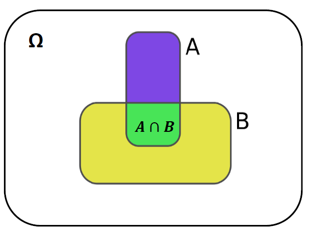
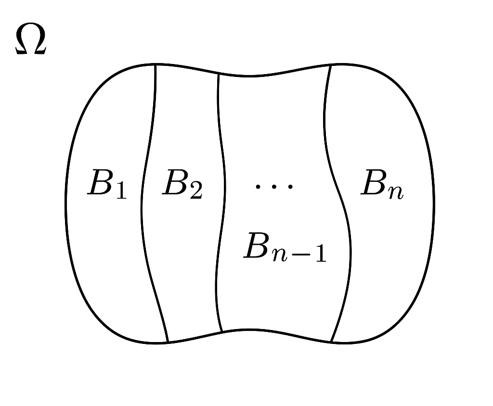
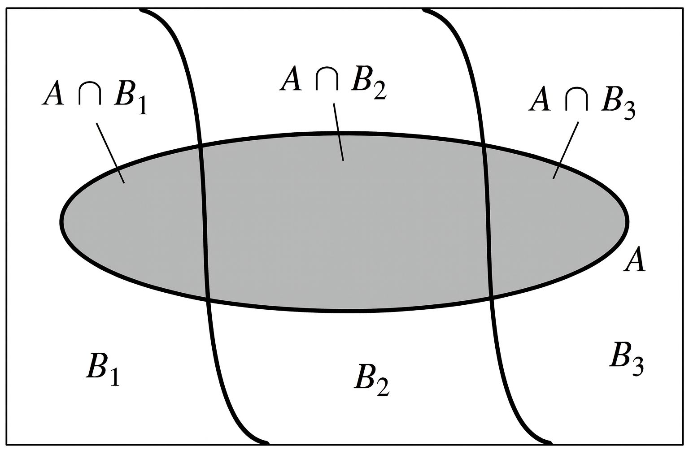

XS-0122 Fundamentos de Teoría Estadística - I Semestre 2026
Suponga que estamos lanzando un dado y queremos ver el resultado de la cara obtenida, es decir, \(\Omega = \{1,2,3,4,5,6\}.\)
¿Cuál es la probabilidad de que sea par?
\(P(\text{Dado sea Par}) = \frac{\mid\{2,4,6 \} \mid}{\mid\Omega \mid} = \frac{3}{6} = 0.5\)
Ahora suponga que sabemos que el resultado ha sido un número primo y nos hacemos la misma pregunta “¿Cuál es la probabilidad de que sea par?”
¿Esta probabilidad cambia? -> Sí
Cómo ha sido un número primo el espacio muestral ha sido modificado: \(\Omega_{primo} = \{1,2,3,5\}.\)
\(P(\text{Dado sea Par}\mid \text{Primo}) = \frac{\mid\{2 \} \mid}{\mid\Omega_{primo} \mid} = \frac{1}{4} = 0.25\)
Sean A y B dos eventos cualesquiera de un espacio muestral \(\Omega\), la probabilidad condicional de A dado que ha ocurrido B, denotada por \(P(A\mid B)\) es:
\[ P(A\mid B) = \frac{P(A\cap B)}{P(B)} \quad \tiny{\text{; si }P(B) >0} \]
Nota: La idea intuitiva es que nuestro espacio muestral original \(\Omega\) , se ha actualizado a \(B\).
Todas los resultados (o eventos) posteriores se calibran entonces con respecto a su relación con \(B\).

Probabilidad Condicional
Propiedad a: Sea \(P\) una función de probabilidad sobre \(\Omega\). Dado los eventos \(A\) y \(B\) , se tiene que: \(P(A-B)=P(A)-P(A\cap B).\)
Ejercicio: Recuerde que \(A-B = A\cap B^c\) y \(A = (A\cap B^c) \cup (A\cap B^c)\)
Propiedades b: Sea \(P\) una función de probabilidad sobre \(\Omega\). Dado los eventos \(A\), \(B\) y \(C\) , se tiene que:
\(P(A^c\mid B)=1-P(A\mid B)\)
\(P(\emptyset\mid B)=0\)
\(P[(A\cup B)\mid C]=P(A\mid C)+P(B\mid C)- P((A \cap B)\mid C)\)
\(A \subseteq B \Rightarrow P(A\mid C) \leq P(B\mid C)\)
Demostraciones de la propiedades b se dejan como ejercicio.
b3. Sugerencia: Aplique Leyes Distributivas
b4. Sugerencia:\(\small \text{ Si } A \subseteq B \text{ entonces: } B = A\cup(A^c \cap B)\)
\(P(A^c\mid B)=1-P(A\mid B)\)
Note que:
\(P(A^c\mid B)=\frac{P(A^c\cap B)}{P(B)} \quad\tiny\text{Def prob. condicional}\)
y \((A^c \cap B) = (A \cup B^c)^c \quad\tiny\text{Leyes de Morgan}\)
entonces \(P(A^c\cap B) = P[(A \cup B^c)^c]\)
\(= 1-P(A \cup B^c)\quad\tiny\text{Complemento}\)
\(= 1 - [P(A) + P(B^c) - P(A \cap B^c)]\quad\tiny\text{Def suma prob}\)
\(= 1- [P(A) + 1 - P(B) - P(A \cap B^c)] \quad\tiny\text{Complemento}\)
\(= - P(A) + P(B) + P(A \cap B^c)\)
Por ende tenemos que \(P(A^c\mid B)=\frac{P(A^c\cap B)}{P(B)} = \frac{ P(B) - P(A) + P(A \cap B^c)}{P(B)}\)
\(=\frac{ P(B) - P(A) + P(A) - P(A\cap B)}{P(B)}\quad\tiny\text{Propiedad a}\)
\(=\frac{ P(B) - P(A\cap B)}{P(B)} = 1 - \frac{P(A\cap B)}{P(B)}\)
\(= 1-P(A\mid B)\)
Si dos eventos, A y B, son tales que \(P(A)=0.5\), \(P(B)=0.3\) y \(P(A\cap B)=0.1\), encuentre lo siguiente:
\(P(A\mid B)\)
\(P(B\mid A)\)
\(P(A\mid (A\cup B))\)
\(P(A\mid (A \cap B))\)
\(P(A \cap B \mid (A \cup B))\)
Considere la siguiente tabla que muestra el resultado de 112 estudiantes del curso de Cálculo I antes de realizar ampliación.
| Resultado | Masculino | Femenino | Total |
|---|---|---|---|
| Aprobado | 24 | 36 | 60 |
| Ampliación | 8 | 4 | 12 |
| Reprobado | 16 | 24 | 40 |
| Total | 48 | 64 | 112 |
Si se selecciona un estudiante al azar, cuál es la probabilidad de que sea Mujer y haya Aprobado inicialmente.
Si se selecciona un estudiante al azar, cuál es la probabilidad de que sea Mujer dado que haya Aprobado el curso en un inicio.
Sea M = Evento “Ser Mujer” y A = Evento “Aprobado”
\(P(M\mid A) = \frac{P(M\cap A)}{P(A)} = \frac{\frac{36}{112}}{\frac{60}{112}} = \frac{36}{60} = 0.6\)
Si se selecciona un estudiante al azar, cuál es la probabilidad de que sea Hombre dado que no haya Aprobado el curso en un inicio.
La probabilidad de la intersección de dos eventos A y B es:
\[ P(A\cap B) = P(A\mid B)\cdot P(B) = P(B\mid A)\cdot P(A) \]
Si A y B son independientes, entonces
\[ P(A\cap B) = P(A)\cdot P(B) \] Este teorema se deduce a partir de la definición de probabilidad condicional.
Observe que esta ley se puede extender para hallar la probabilidad de la intersección de cualquier número de eventos.
\(\small\text{Es decir: }P\left( \bigcap_{i=1}^n A_i \right) = P(A_1) P(A_2 \mid A_1) P(A_3 \mid A_1 \cap A_2) \cdots P\left( A_n \mid A_1 \cap A_2 \cap \cdots \cap A_{n-1} \right)\)
Ejemplo: Suponga que en una bolsa tenemos 10 libros, 4 de matemáticas, 3 de ciencias y 3 de Inglés.
Si seleccionamos dos libros (sin reemplazo) y queremos que ambos sean de matemáticas. ¿Cuál sería la probabilidad de dicho evento?
Usando probabilidad condicional tendríamos:
\(M_1 = \text{La primera selección es un libro de matemáticas}\)
\(M_2 = \text{La segunda selección es un libro de matemáticas}\)
\(P(M_1\cap M_2) = P(M_2\mid M_1)\cdot P(M_1) = \frac{3}{9}\cdot \frac{4}{10} = \frac{2}{15} = 0.1333\)
Note que esto lo podríamos haber resuelto usando métodos de conteo: \(\frac{\binom{4}{2}}{\binom{10}{2}} = \frac{2}{15}= 0.1333\)
Sea A y B dos eventos independientes, entonces se cumple que:
\(A^c \text{ y } B \text{ son independientes}\)
\(A \text{ y } B^c \text{ son independientes}\) (Ejercicio)
\(A^c \text{ y } B^c \text{ son independientes}\) (Ejercicio)
Prueba de 1. (Queremos mostrar que \(P(A^c\cap B)=P(A^c)\cdot P(B)\)
*Tenemos la hipótesis de que A y B son independientes.
\(\text{Sabemos que: }P(A^c\cap B)=P(B)-P(A\cap B) \quad \text{clase 4 propiedad 6}\)
\(=P(B)-P(A)\cdot P(B) \quad \text{hipótesis}\)
\(=P(B)[1-P(A)]\)
\(=P(B)\cdot P(A^c) \quad \text{def complemento}\)
El método de composición de evento para resolver problemas de probabilidad en ocasiones se facilita al ver \(\Omega\), como una unión de subconjuntos mutuamente excluyentes y usar la siguiente ley de probabilidad total.
Para algún entero positivo \(k\), sean los conjuntos \(B_1, B_2, \cdots B_k\) tales que
\(\Omega = B_1 \cup B_2 \cup \cdots B_k\)
\(B_i \cap B_j = \emptyset, \quad\text{para } i \neq j\)
Entonces se dice que la colección de conjuntos \(B_1, B_2, \cdots B_k\) es una partición de \(\Omega\),.
Si \(A\), es cualquier subconjunto de \(\Omega\), y \(B_1, B_2, \cdots B_k\) es una partición de \(\Omega\), entonces \(A\) puede descomponerse como sigue:
\[ A = (A\cap B_1) \cup (A\cap B_2) \cup \cdots \cup (A\cap B_K) \]

Partición de Omega
Suponga que \(B_1, B_2, \cdots B_k\) es una partición de \(\Omega\) tal que \(P(B_i) > 0, \forall i \in 1,2,\cdots ,k.\) Entonces, para cualquier evento \(A\)
\[ P(A) = \sum_{i=1}^{k} {P(A\mid B_i)\cdot P(B_i)} \]
Prueba:
\(P(A) = P(A \cap \Omega) = P(A \cap [ B_1 \cup B_2 \cup \cdots B_k])\)
\(=P([A \cap B_1] \cup [A\cap B_2] \cup \cdots [A \cap B_k]) \quad \text{Distributividad}\)
\(=P(A \cap B_1) + P(A\cap B_2) + \cdots + P(A \cap B_k) \quad \text{Cada }B_i\text{ es disjunto}\)
\(=P(A \mid B_1)\cdot P(B_1) + P(A\mid B_2)\cdot P(B_2) + \cdots + P(A \mid B_k)\cdot P(B_k) \quad \text{Def Prob Condicional}\)
\(= \sum_{i=1}^{k} {P(A\mid B_i)\cdot P(B_i)}\)

Probabilidad Total
1) Se dispone de tres cajas con bombillas. La primera contiene 10 bombillas de las cuales cuatro están fundidas; en la segunda hay seis bombillas de las cuales hay una fundida, y la tercera caja contiene tres bombillas fundidas de un total de ocho. Si seleccionar cada caja tiene la misma probabilidad. ¿Cuál es la probabilidad de que, al tomar una bombilla al azar de alguna caja, esta esté fundida?
\(P(A) = P(A \mid B_1)\cdot P(B_1) + P(A\mid B_2)\cdot P(B_2) +P(A\mid B_3)\cdot P(B_3)\)
\(P(A) = \frac{1}{3}\cdot \frac{4}{10} +\frac{1}{3}\cdot \frac{1}{6}+\frac{1}{3}\cdot \frac{3}{8} \approx 0.31\)
¿Qué pasaría si la probabilidad de seleccionar la primera caja es del 50%, la segunda del 10% y la tercerca del 40%?
2) Hay dos métodos, A y B, para enseñar cierta habilidad industrial. El porcentaje de no aprobados es 20% para A y 10% para B, pero B es más costoso y por tanto se usa sólo 30% del tiempo. (A es empleado el otro 70%.) A una trabajadora se le enseñó la habilidad por uno de los dos métodos. ¿Cuál es la probabilidad de que la haya aprendido correctamente?
\(P(Aprender) = P(Aprender \mid métodoA)\cdot P(métodoA) + P(Aprender\mid métodoB)\cdot P(métodoB)\)
\(P(Aprender) = 0.80\cdot 0.70 +0.90\cdot 0.30 = 0.83\)
¿Cuánto es \(P(Aprender \cap MétodoB)\)?
Suponga que \(B_1, B_2, \cdots B_k\) es una partición de \(\Omega\) tal que \(P(B_i) > 0, \forall i \in 1,2,\cdots ,k\) y se \(A\) un evento cualquiera de \(\Omega\). Entonces:
\[ P(B_j\mid A) = \frac{P(A \mid B_j)\cdot P(B_j)}{\sum_{i=1}^{k} {P(A\mid B_i)\cdot P(B_i)}} \]
Prueba:
\[ P(B_j\mid A) = \frac{P(A \cap B_j)}{P(A)} \quad \small\text{definición condicional}\]
\[ \quad = \frac{P(A \mid B_j)\cdot P(B_j)}{P(A)} \quad \small\text{definición de intercepción}\]
\[ \quad = \frac{P(A \mid B_j)\cdot P(B_j)}{\sum_{i=1}^{k} {P(A\mid B_i)\cdot P(B_i)}} \quad \small\text{Teorema Prob Total}\]
1)Hay dos métodos, A y B, para enseñar cierta habilidad industrial. El porcentaje de no aprobados es 20% para A y 10% para B, pero B es más costoso y por tanto se usa sólo 30% del tiempo. (A es empleado el otro 70%.) A una trabajadora se le enseñó la habilidad por uno de los dos métodos pero no la aprendió correctamente. ¿Cuál es la probabilidad de que se le haya enseñado por el método A?
\(P(\text{Método A}\mid \text{No Aprendió})\)
Usando la regla de Bayes tenemos: \(\small P(B_j\mid A) = \frac{P(A \mid B_j)\cdot P(B_j)}{\sum_{i=1}^{k} {P(A\mid B_i)\cdot P(B_i)}}\)
Es decir: \(\small P(\text{Método A}\mid \text{No Aprendió}) = \frac{P(\text{No Aprender} \mid \text{Método A})\cdot P(\text{Método A})}{P(\text{No Aprender} \mid \text{Método A})\cdot P(\text{Método A})+ P(\text{No Aprender} \mid \text{Método B})\cdot P(\text{Método B})}\)
Note que el denominador es igual a \(\small P(\text{No Aprender}) = 1 - P(\text{Aprender}) = 1 - 0.83 = 0.17\) (ver diapositva 16)
Por ende: \(\small P(\text{Método A}\mid \text{No Aprendió}) = \frac{0.20\cdot0.70}{0.17} \approx 0.8235\)
2) Una prueba de diagnóstico para una enfermedad es tal que (correctamente) detecta la enfermedad en 90% de los individuos que en realidad tienen la enfermedad. También, si una persona no tiene la enfermedad, la prueba reportará que él o ella no la tiene con probabilidad 0.85 . Sólo 1% de la población tiene la enfermedad en cuestión. Si una persona es seleccionada al azar de la población y la prueba de diagnóstico indica que tiene la enfermedad.
¿cuál es la probabilidad condicional de que tenga, en realidad, la enfermedad? \(R \approx 0.0571\)
Debido al resultado anterior, esta persona vuelve hacerse la prueba y el diagnostico vuelve a indicar que tiene la enfermedad. ¿cuál es la probabilidad condicional de que tenga, en realidad, la enfermedad?
1) Una población de electores contiene 40% de republicanos y 60% de demócratas. Se publica que 30% de los republicanos y 70% de los demócratas están a favor de un tema de elección. Se encuentra que una persona seleccionada al azar de esta población está a favor del tema en cuestión. Encuentre la probabilidad condicional de que esta persona sea un demócrata.
2) De los viajeros que llegan a un pequeño aeropuerto, 60% vuelan en líneas aéreas importantes, 30% en aviones de propiedad privada y el resto en aviones comerciales que no pertenecen a una línea aérea importante. De quienes viajan en líneas aéreas importantes, 50% viajan por negocios en tanto que 60% de quienes llegan en aviones privados y 90% de quienes llegan en otros aviones comerciales viajan por negocios. Suponga que seleccionamos al azar una persona que llega a este aeropuerto. ¿Cuál es la probabilidad de que la persona:
Viaje por Negocios?
Viaje por Negocio en un un avión privado?
llegue en un avión privado, dado que la persona viaja por negocios?
viaja por negocio, dado que vuela en un avión comercial?
3) Un director de personal tiene dos listas de solicitantes para trabajos. La lista 1 contiene los nombres de cinco mujeres y dos hombres, mientras que la lista 2 contiene los nombres de dos mujeres y seis hombres. Un nombre se selecciona al azar de la lista 1 y se agrega a la lista 2. A continuación se selecciona al azar un nombre de la lista 2 aumentada. Dado que el nombre seleccionado es de un hombre, ¿cuál es la probabilidad de que un nombre de mujer se haya seleccionado originalmente de la lista 1?
4) Use la definición de probabilidad condicional y la ley de probabilidad total, para demostrar lo siguiente:
Si \(P(A\mid B) = P(A\mid B^c)\), entonces A y B son independientes.
5) Cinco tazones idénticos están marcados\(1,2,\cdots,5\). El tazón \(i\) contiene \(i\) bolas blancas y \(5-i\) bolas negras, con \(i=1,2,\cdots,5\). Un tazón se selecciona al azar y dos bolas se seleccionan al azar (sin restitución) de él.
¿Cuál es la probabilidad de que ambas bolas seleccionadas sean blancas?
Dado que ambas bolas seleccionadas son blancas, ¿cuál es la probabilidad de que el tazón 3 haya sido seleccionado?